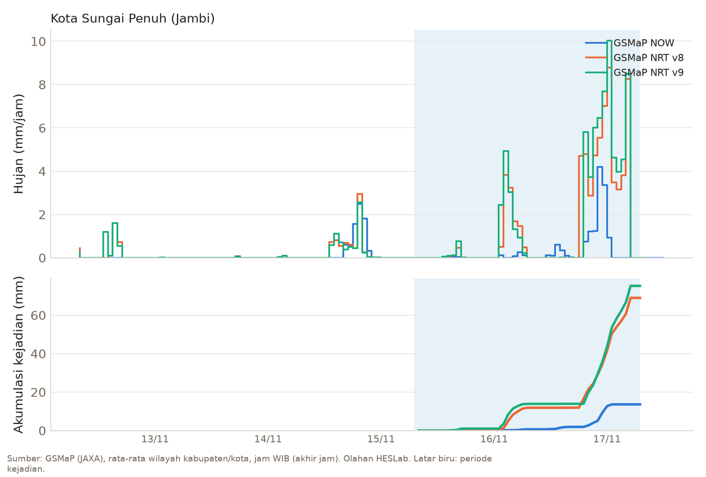
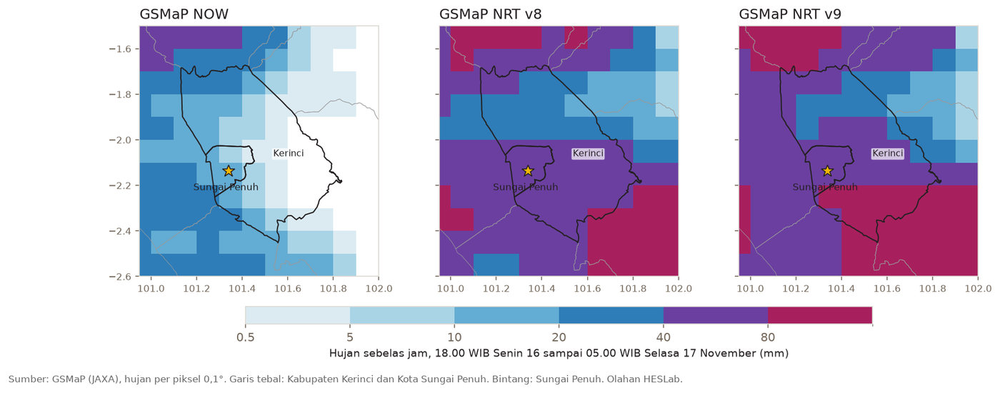
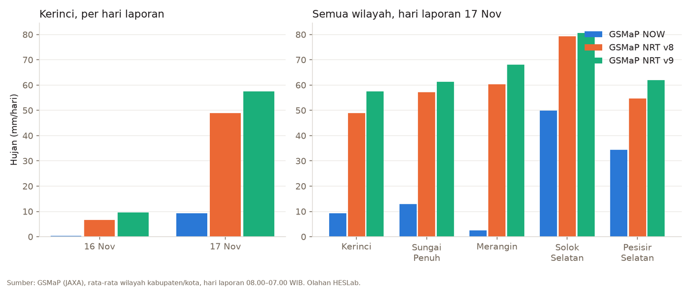

Daftar isi
Senin, 16 November 2026, tanggul Sungai Batang Merao jebol di Desa Lubuk Suli, Kecamatan Depati Tujuh, Kabupaten Kerinci. Ratusan rumah di Kerinci dan Kota Sungai Penuh terendam. Tulisan ini membaca hujan hari itu dengan tiga produk satelit GSMaP yang terbit cepat (NOW, NRT v8, dan NRT v9), lalu membandingkannya dengan hujan pada tiga banjir Batang Merao sebelumnya. Menurut NRT, hujan turun dalam dua gelombang: dini hari Senin, lalu hampir tanpa henti dari Senin malam sampai Selasa subuh. Hujan per jamnya tidak deras, tetapi berlangsung lama. Menurut NRT v8, hujan sehari ini bukan yang terbesar dalam setahun, tetapi lebih besar daripada hujan menjelang tiga banjir sebelumnya.

Apa yang tercatat di lapangan
Hujan deras mengguyur Kerinci dan Sungai Penuh pada Senin, 16 November. Arus Sungai Batang Merao yang deras menjebol tanggul di Desa Lubuk Suli. Air merendam permukiman di Desa Koto Dian, Kecamatan Hamparan Rawang, Kota Sungai Penuh, yang termasuk paling parah, serta jalan utama dan permukiman di Koto Baru. Tinggi air sekitar satu meter, dan di beberapa titik hampir dua meter. Hampir semua rumah di tepi sungai di desa-desa yang paling parah ikut terendam. Camat Hamparan Rawang meninjau tanggul yang jebol pada Selasa, 17 November, mendata kerusakan, dan meminta warga yang rumahnya tidak layak huni untuk mengungsi. Warga Koto Dian menyebut wilayah mereka hampir dua tahun bebas dari banjir besar (Jambi Update). Berita itu tidak menyebut jam tanggul jebol.
Apa kata satelit
Satu hari laporan adalah pukul 08.00 WIB hari sebelumnya sampai 07.00 WIB tanggal itu, seperti di HESLab Portal. Hujan Senin dini hari masuk hari laporan 16 November. Hujan Senin malam sampai Selasa subuh masuk hari laporan 17 November.
| Rata-rata wilayah (mm) | NOW | NRT v8 | NRT v9 |
|---|---|---|---|
| Kerinci, hari laporan 16 Nov | 0,4 | 6,7 | 9,5 |
| Kerinci, hari laporan 17 Nov | 9,3 | 48,9 | 57,5 |
| Kota Sungai Penuh, hari laporan 16 Nov | 0,6 | 11,9 | 13,9 |
| Kota Sungai Penuh, hari laporan 17 Nov | 13,0 | 57,1 | 61,3 |
Menurut NRT v8 dan v9, gelombang pertama turun pada jam yang berakhir 02.00 sampai 07.00 WIB Senin, sekitar 12 sampai 14 mm di Sungai Penuh. Siangnya hampir kering. Gelombang kedua mulai pukul 19.00 WIB Senin dan berlanjut sampai jam yang berakhir 05.00 WIB Selasa. Selama sebelas jam itu hujan di piksel Sungai Penuh umumnya 3 sampai 11 mm per jam, berjumlah 60 mm menurut NRT v8 dan 68 mm menurut NRT v9. Jam terderas justru di ujung malam: sekitar 9 sampai 11 mm pada jam yang berakhir 01.00 dan 05.00 WIB.
GSMaP NOW mencatat jauh lebih sedikit. Di piksel Sungai Penuh NOW hanya mencatat 14 mm malam itu, dan tidak mencatat hujan sama sekali setelah tengah malam.

Menurut NRT v8 dan v9, hujan malam itu menutupi hampir seluruh lembah Kerinci, 40 sampai 80 mm per piksel di sekitar Sungai Penuh. Lebih dari 80 mm jatuh di Kerinci bagian selatan dan di luar Kerinci, di utara (Solok Selatan) dan tepi barat daya. Wilayah tetangga juga basah pada hari laporan 17 November: Solok Selatan 79 sampai 81 mm, Merangin 60 sampai 68 mm, dan Pesisir Selatan 55 sampai 62 mm menurut NRT.

Seberapa jarang?
Untuk menilainya, hujan kejadian ini dibandingkan dengan hujan 24 jam terbesar tiap tahun 2015–2025 dalam arsip GSMaP NRT v8.
- Kerinci: hujan 24 jam terbesar kejadian ini 50 mm, di urutan ke-12 dari 12. Tiap tahun 2015–2025 punya hari yang lebih basah. Terbesar 99 mm (2020).
- Kota Sungai Penuh: 59 mm, juga di urutan ke-12 dari 12. Terbesar 160 mm (2019).
- Hujan terbesar dalam satu jam hanya 9 sampai 11 mm, dan dalam tiga jam 20 sampai 24 mm menurut NRT.
Jadi menurut satelit, hujan 16–17 November tidak luar biasa untuk ukuran setahun. Yang menonjol adalah lamanya hujan malam itu.
Dibanding banjir sebelumnya
Banjir Batang Merao bukan kejadian baru. Tiga di antaranya diberitakan dengan waktu yang cukup jelas:
- 1 Januari 2024. Banjir mulai malam Tahun Baru dan berlangsung berminggu-minggu. Sekitar 27.000 warga Kerinci dan Sungai Penuh terdampak menurut BPBD Provinsi Jambi (Liputan6).
- 27 November 2025. Hujan turun dari Rabu malam sampai Kamis pagi, dan air mulai naik sekitar pukul 04.30 WIB. Lubuk Suli dan beberapa desa di Hamparan Rawang ikut terendam (Suara Bernas).
- 29 Maret 2026. Hujan deras Minggu sore membuat Batang Merao meluap di Siulak, Air Hangat, dan Lubuk Suli (Jentik).
Tabel berikut memakai GSMaP NRT v8, satu-satunya produk dengan arsip yang mencakup keempat kejadian. Hujan dicari dalam dua sampai tiga hari laporan sampai pagi setelah banjir.
| Piksel Sungai Penuh, NRT v8 (mm) | 1 Jan 2024 | 27 Nov 2025 | 29 Mar 2026 | 16–17 Nov 2026 |
|---|---|---|---|---|
| Hujan 6 jam terbesar | 28 | 4 | 51 | 36 |
| Hujan 24 jam terbesar | 37 | 6 | 56 | 63 |
| Hujan 7 hari sampai puncak 24 jam | 117 | 63 | 58 | 132 |
| Rata-rata Kerinci, hujan 24 jam terbesar | 24 | 6 | 22 | 49 |
Menurut NRT v8, hujan 24 jam dan 7 hari menjelang banjir 16–17 November adalah yang terbesar dari keempat kejadian. Rata-rata Kerinci kira-kira dua kali kejadian 2024 dan Maret 2026. Banjir besar 2024 dimulai setelah hujan 24 jam yang lebih kecil, tetapi didahului hujan seminggu yang hampir sama banyaknya. Untuk banjir 27 November 2025, satelit hampir tidak mencatat hujan: hanya 6 mm sehari di piksel Sungai Penuh. Hujan saat itu mungkin terlalu lokal untuk tertangkap satelit, atau luapan juga dipicu hal lain.
Banjir Batang Merao terjadi dengan hujan yang tidak selalu besar. Pada 2024, akademisi geologi UGM dan Walhi Jambi menyebut hujan sebagai pemicu, bukan akar masalah. Akademisi UGM menunjuk pendangkalan sungai, terutama Batang Merao, dan Danau Kerinci yang tidak lagi mampu menampung limpasan. Keduanya juga menyoroti kerusakan di hulu (Liputan6). Data hujan satelit tidak bisa menguji pendapat itu, tetapi sejalan dengan temuan di atas: banjir bisa terjadi tanpa hujan yang luar biasa.
Batasan
- Nilai adalah hujan per piksel 0,1° (sekitar 11 km) atau rata-rata kabupaten/kota dari satelit. Hujan di satu titik bisa jauh lebih besar.
- Ketiga produk tidak dikoreksi dengan pos hujan. Produk Standard untuk tanggal ini baru tersedia sekitar tiga hari kemudian. GSMaP NOW hanya memakai paruh pertama tiap jam.
- Peringkat hanya membandingkan dengan hujan 24 jam terbesar tiap tahun dalam arsip produk yang sama, tanpa analisis frekuensi, sehingga bukan kala ulang. NRT v9 baru tersedia sejak Oktober 2026 dan belum bisa diberi peringkat.
- Perbandingan antarkejadian memakai piksel di titik wakil Kota Sungai Penuh, bukan daerah tangkapan Batang Merao. Tulisan ini tidak memakai data pos hujan, tinggi muka air sungai, atau tinggi muka Danau Kerinci.
Rujukan
- Jambi Update, 17 November 2026. Tanggul Sungai Batang Merao jebol, ratusan rumah di Kerinci dan Sungai Penuh terendam banjir.
- Suara Bernas, 27 November 2025. Sungai Batang Merao meluap, banjir rendam sejumlah desa di Kerinci dan Sungai Penuh.
- Jentik, 30 Maret 2026. Hujan deras picu banjir, Sungai Batang Merao meluap rendam rumah warga.
- Liputan6, 3 Januari 2024. Musabab tragedi banjir parah di Kerinci-Sungai Penuh.
- JAXA. GSMaP NOW, NRT v8, dan NRT v9 (tanpa koreksi pos hujan), per piksel dan rata-rata per kabupaten/kota, diolah HESLab.